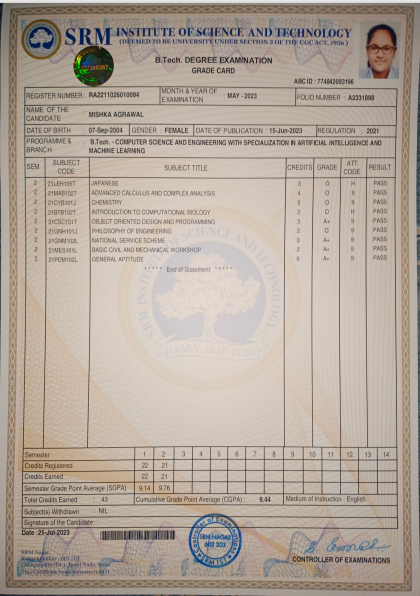

In my inaugural semester, I achieved a commendable CGPA of 9.14, laying the foundation for my academic
journey. Determined to raise the bar, I dedicated myself to rigorous studies and strategic learning
methods, resulting in a significant improvement in the subsequent semester, where my CGPA soared to an
impressive 9.76. This remarkable ascent reflects not only my hard work but also a deep commitment to
academic excellence.
As I reflect on this achievement, I am motivated to sustain this positive momentum throughout my
academic career. The cumulative CGPA for my first year stands at an encouraging 9.45, underscoring a
consistent and dedicated approach to my studies. Importantly, I am proud to state that I have
successfully navigated my coursework without accruing any arrears or backlogs, a testament to my
diligence and commitment to staying on top of my academic responsibilities.
Looking forward, I am enthusiastic about continuing this trajectory of success, embracing challenges,
and further enriching my academic experience at SRM.
